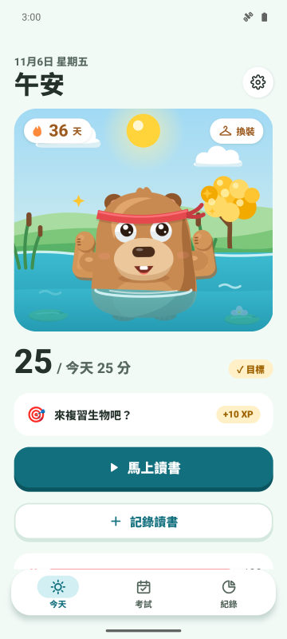
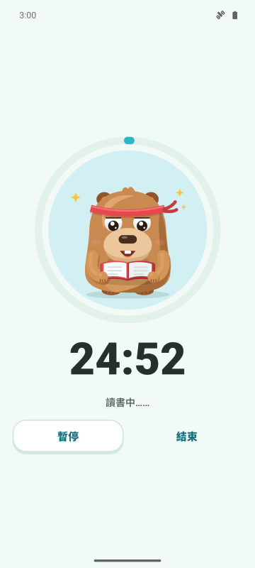
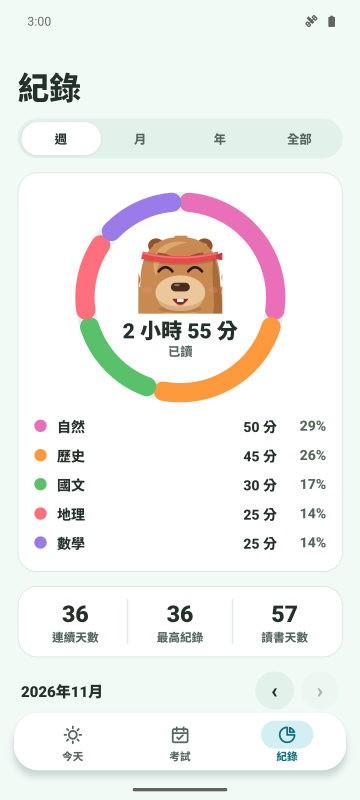
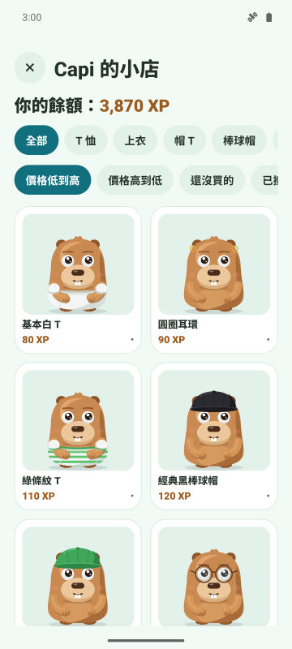

每日目標與連續紀錄
設定每天讀書幾分鐘。達成目標，連續紀錄就會增加，水豚也會開心慶祝。
專注計時器、每日連續紀錄、考試倒數。讀得越多，你的水豚就越開心、越強壯。
即將登上 Google Play
Android 免費。iPhone 版之後推出。

設定每天讀書幾分鐘。達成目標，連續紀錄就會增加，水豚也會開心慶祝。
三種模式的計時器。在防護模式下，水豚會出現在你想避開的 App 上方。
新增考試、查看剩餘天數。每天都有一個任務，提醒你最需要加強的科目。
讀書賺 XP，換成衣服和配件。節日和你的生日，水豚也會一起慶祝。



是的，App 免費並含廣告。進階版（可選）會移除廣告，並開啟防護模式、專注時靜音通知和每月 3 個連續紀錄保護。
不需要。資料都存在你的手機裡，也可以選擇同步到你自己的 Google 雲端硬碟。
可以。新增考試日期就能看到倒數，並在考前 7 天、3 天和 1 天收到提醒。
Forest 是種樹；CapyFoco 是照顧一隻隨著你讀書長大的水豚，連續紀錄、目標和考試倒數都在同一個 App。
目前只有 Android，iPhone 版已在規劃中。